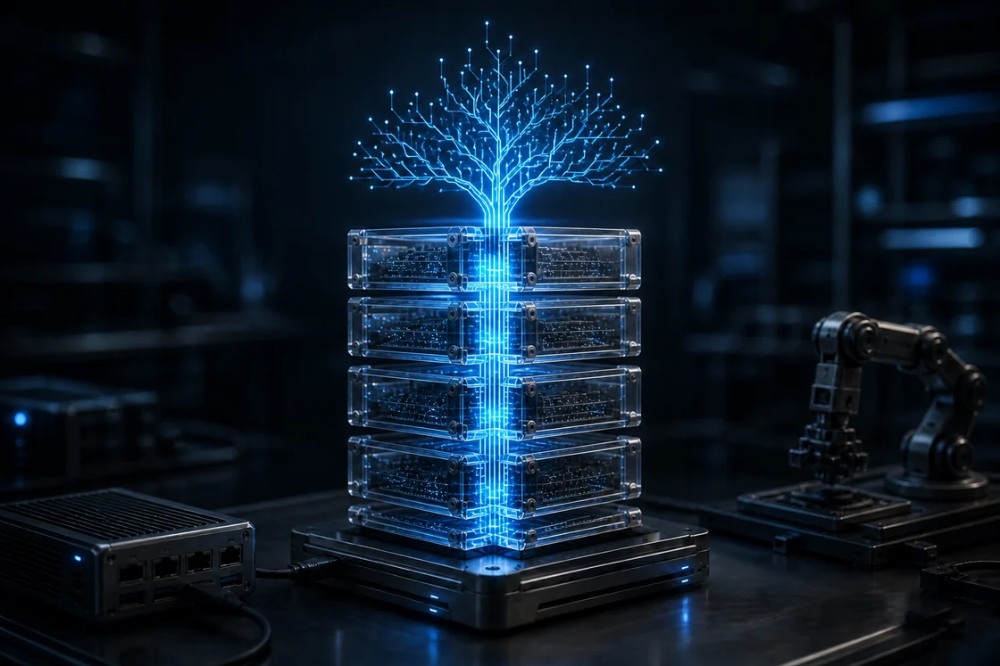

Source-available · Signed 0.1 preview
A computing stack you can inspect end to end.
Windvale is one coherent system: a readable language, deterministic compiler, portable bytecode, verified runtime, native tools, libraries, database work, and an operating-system path. The working stack runs on Windows and Linux, and its compiler and interpreter also run in the browser.
Available today
Windows
Linux
Browser Workbench

Windvale stack
One system · explicit boundaries
- 01SourceLanguage · packages
- 02CompilerWIR · lowering
- 03BytecodeCanonical WVB
- 04ExecutionVerifier · runtime
- 05SystemsLibraries · WVDB · OS path
Working now Source → canonical WVB → verification → execution
Emerging, with a working core
Use what exists. Inspect what comes next.
The signed 0.1 preview, portable bytecode path, native tools, and browser compiler are available now. Language 1.0, broader libraries, WVDB, and Windvale OS remain active work—not finished-product claims.